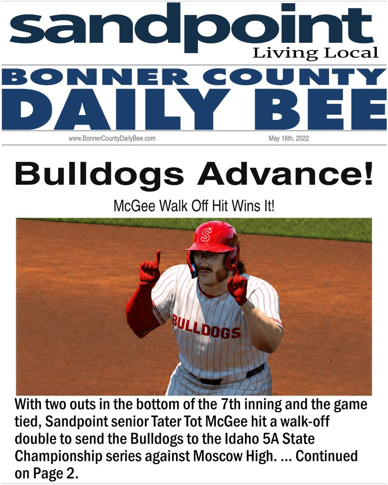

TATER TOT CHRONICLES
A family and baseball archive
The baseball story has a beginning long before pro ball — and every stop carries part of the McGee family history with it.
The McGee story begins in Ireland, moves to Idaho and becomes inseparable from Sandpoint, farming and baseball.
Read the McGee StoryA walk-off double sends Sandpoint to the Idaho 5A State Championship Series. Six days later, the Bulldogs are champions.


The New York Yankees select McGee 27th overall, but the family’s long emphasis on education helps steer him to Fresno State.
McGee completes college in three years and leads Fresno State to a College World Series championship.

On July 14, the Mariners select McGee first overall. The family’s long connection to Seattle becomes the next chapter.

PACIFIC begins weekly coverage as McGee opens his professional career with the Double-A Arkansas Travelers.

Issue 10 closes the Double-A chapter. McGee is promoted to Triple-A Tacoma and moves one step closer to Seattle.